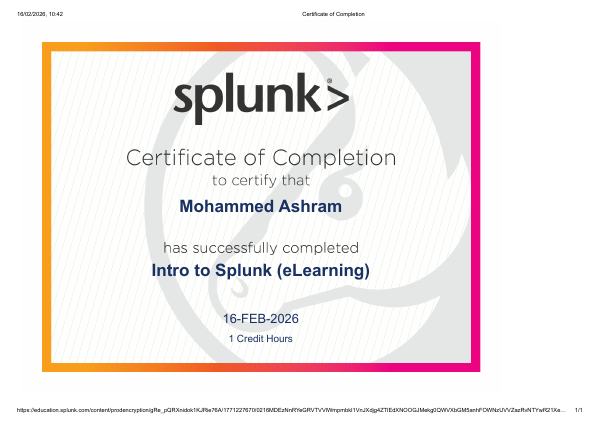
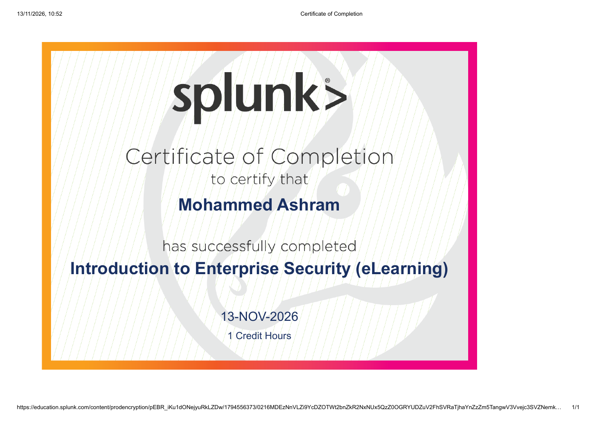
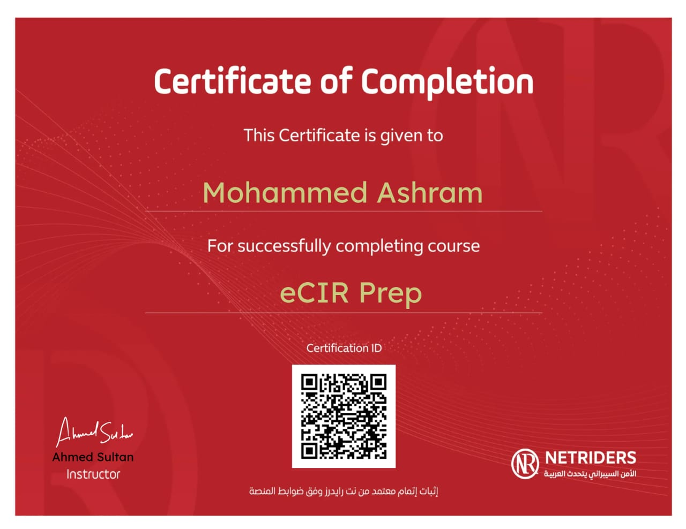
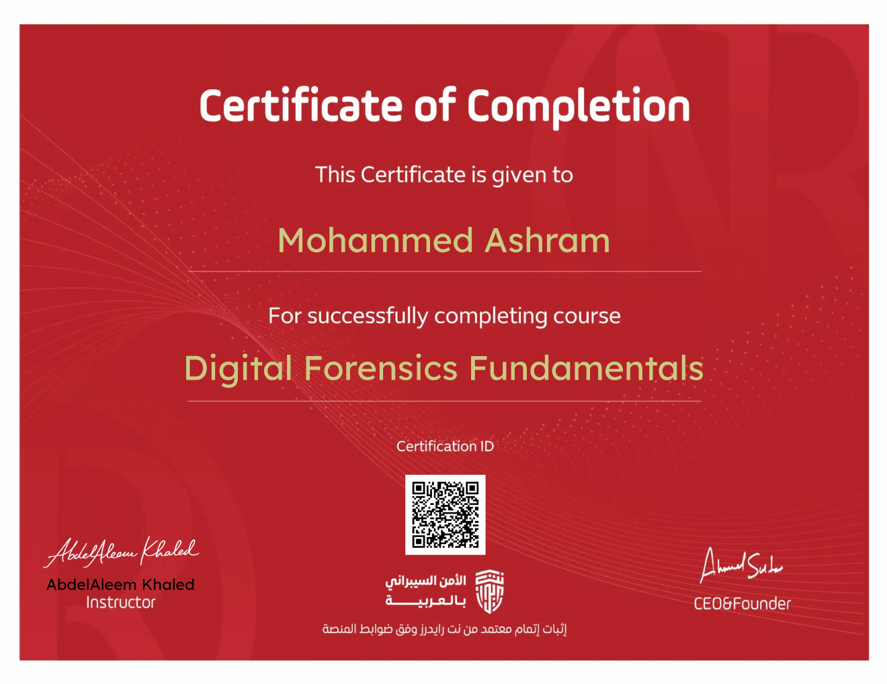

نظام ذكي لتحليل الحزم واكتشاف الحوادث
تطوير نظام يعالج ملفات PCAP، ويستخرج سمات حركة الشبكة ويعرضها، ثم يصنّف الحركة الضارة باستخدام Random Forest لدعم اكتشاف الحوادث. النظام قيد التحسين.
PythonGoJavaPCAPRandom Forest
رابط إثبات العمل
عمليات الأمن السيبراني والاستجابة للحوادث
SOC Analyst · Blue Team · مراقبة الشبكات
خريج أمن معلومات يركز على التحقيق في الحوادث وتحليل السجلات وحركة الشبكة
SECURITY OPERATIONS & TRIAGE
تحليل التنبيهات والسجلات وحركة الشبكة، والتمييز بين النشاط الطبيعي والمشبوه، وتوثيق النتائج وتوصيات الدفاع.
01 / نبذة
خريج أمن معلومات من جامعة سيئون، بنيت خبرة تطبيقية عبر مختبرات الدفاع السيبراني والمشاريع الشخصية ومختبر منزلي. أركز على تحليل السجلات وحركة الشبكة، والتحقيق في الحوادث، واستخلاص مؤشرات الاختراق لصياغة توصيات دفاعية واضحة.
أبحث عن فرصة بداية مهنية أساهم فيها في المراقبة الأمنية والتحقيق والاستجابة للحوادث.
02 / أعمال مختارة
تطبيقات عملية في تحليل الشبكات، ومراقبة الأحداث، والاستجابة للحوادث.
تطوير نظام يعالج ملفات PCAP، ويستخرج سمات حركة الشبكة ويعرضها، ثم يصنّف الحركة الضارة باستخدام Random Forest لدعم اكتشاف الحوادث. النظام قيد التحسين.
بناء بيئة تضم Kali Linux وWindows وWindows Server وMetasploitable وSplunk لمحاكاة الهجمات ومراجعة السجلات وحركة الشبكة وتحسين فرص الاكتشاف.
تطبيق مصادقة وصلاحيات حسب الدور ومعاملات قاعدة بيانات آمنة واستعلامات مقيّدة للحد من حقن SQL.
تطبيق سطح مكتب لإدارة الكتب والأعضاء وعمليات الاستعارة والإرجاع.
03 / المنصات التدريبية
روابط ملفاتك على منصات التدريب العملي ومختبرات الأمن السيبراني.
04 / المدونة
مقالات تقنية وملخصات مختبرات وفيديوهات من القناة.
ستتم إضافتها قريبًا.
WRITE-UP · VIDEO · FIELD NOTE05 / الدورات والشهادات
تفاصيل مختصرة لكل مسار، مع زر عرض الشهادة عند توفر رابطها.

شهادة إتمام دورة Intro to Splunk للتعلم الإلكتروني، بساعة تعليمية واحدة.
عرض الشهادة
شهادة إتمام دورة Introduction to Enterprise Security (eLearning) من Splunk، بساعة تعليمية واحدة.
عرض الشهادة

شهادة إتمام دورة Digital Forensics Fundamentals من NetRiders Academy.
عرض الشهادةتحقق من الشهادةدراسة موضوعات اختبار الاختراق وتصعيد الصلاحيات وActive Directory وما بعد الاستغلال.
عرض الشهادةأساسيات TCP/IP والتوجيه والتحويل وتقسيم الشبكات واستكشاف أعطال الشبكات.
عرض الشهادةدراسة ذاتية لمفاهيم الأمن السيبراني، والتهديدات والثغرات، وأمن الشبكات، وإدارة المخاطر والاستجابة للحوادث.
دراسة ذاتية لأساسيات مكونات الحاسوب وأنظمة التشغيل وصيانة الأجهزة واستكشاف الأعطال التقنية.
06 / المهارات
التحقيق في الحوادث، تحليل السجلات، اكتشاف التهديدات، تحليل حركة الشبكة، تحديد مؤشرات الاختراق، أساسيات SIEM.
Splunk · Wireshark · Suricata · Snort · Zeek · Volatility · Nmap · Metasploit · Burp Suite · Kali Linux
TCP/IP، التوجيه والتحويل، تقسيم الشبكات، IDS/IPS، الجدران النارية، Windows Server وLinux.
MITRE ATT&CK · OWASP Top 10 · Cyber Kill Chain · Incident Handling
Python · Go · Java · Bash · PHP · PowerShell · C# · SQL Server · Oracle
دراسة مسارات eCIR وOSCP وأساسيات Network+ ضمن التعلم الذاتي، إلى جانب تطبيقات عملية في الاستجابة للحوادث والشبكات.
07 / الخلفية
بكالوريوس أمن المعلومات
جامعة سيئون · حضرموت، اليمن
2022 — 2026اللغات
الإنجليزية بمستوى عملي مناسب للتواصل في بيئة العمل.
08 / تواصل
أدخل بريدك الإلكتروني ورسالتك، وسأعاود التواصل معك.